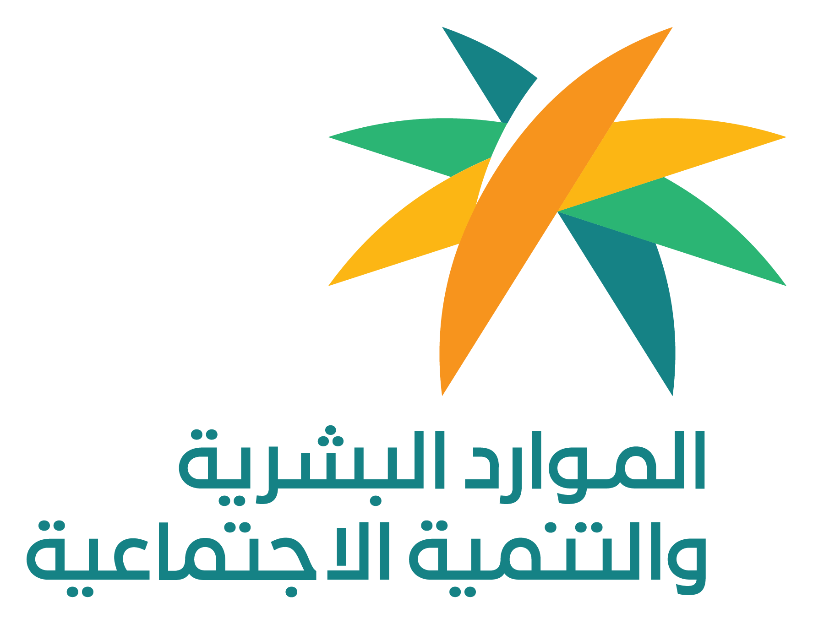
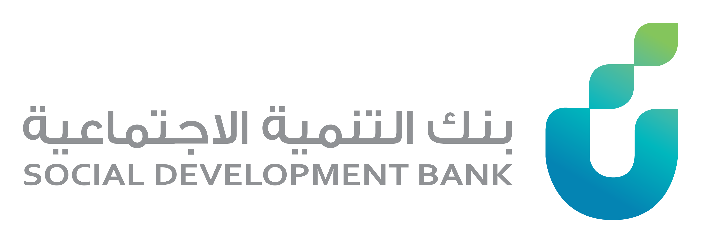
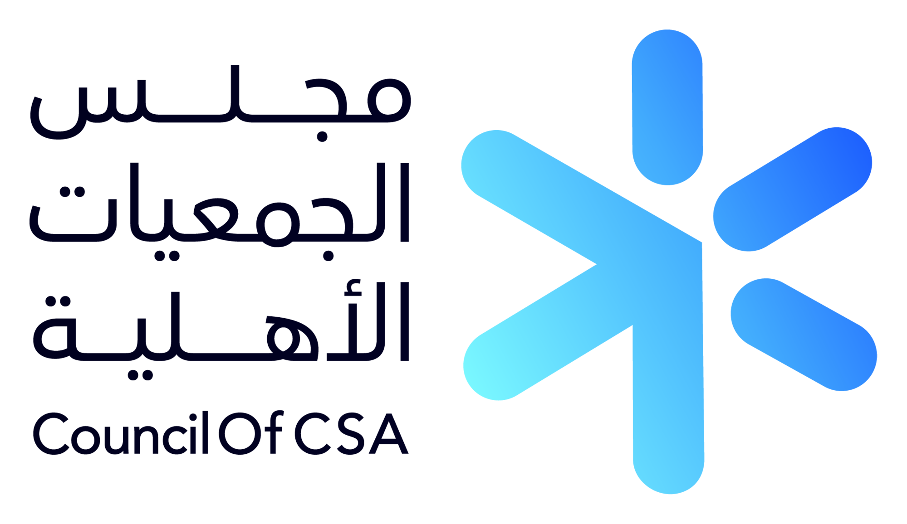
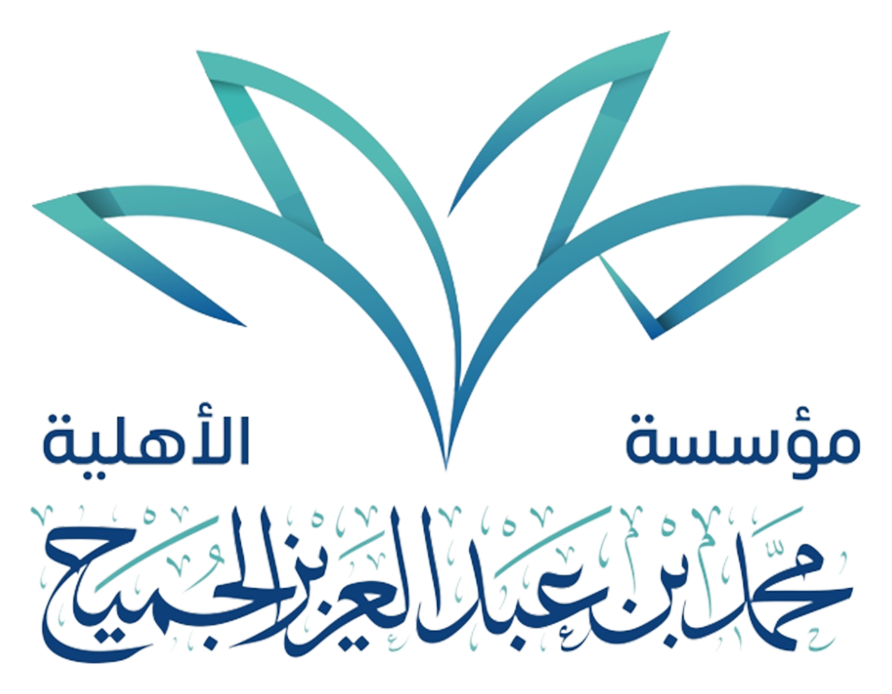

01
تنسيق وتمثيل القطاع
تنظيم العلاقة بين الجهات الأعضاء وتمثيلها أمام الجهات التشريعية والمجتمع بصوت موحّد ومؤسسي مرجعي.
+120جهة عضو
34اجتماع تنسيقي
12مذكّرة سياسات

يضمّ مجلس سَنَد ممثلين عن الجهات العاملة في القطاع، ويعمل على تنسيق الجهود وصياغة السياسات ودعم بناء القدرات وتوحيد الممارسات تحت معايير مؤسسية موحّدة تخدم المستفيد النهائي.
سياسات معتمدة، إفصاح كامل، وتدقيق دوري لضمان الثقة.
صوت مؤسسي واحد أمام الجهات التشريعية والشركاء.
خدمات تنسيقية عبر مناطق المملكة بشراكات نوعية.
خمس ركائز نعمل من خلالها لتحقيق أثر مؤسسي مستدام — اختر هدفاً لاستكشاف تفاصيله.
تنظيم العلاقة بين الجهات الأعضاء وتمثيلها أمام الجهات التشريعية والمجتمع بصوت موحّد ومؤسسي مرجعي.
برامج تأهيل وتدريب نوعية لرفع كفاءة العاملين في الجهات الأعضاء وفق احتياجات القطاع الفعلية.
أدلة عمل وسياسات معتمدة تضمن جودة الخدمة وانضباط الإجراءات على مستوى القطاع كاملاً.
تفعيل شراكات نوعية مع جهات حكومية وخاصة ومنظمات دولية تعزّز موقع القطاع وأثره.
تطبيق أعلى معايير الإفصاح والامتثال لتعزيز ثقة الشركاء والجهات الأعضاء والمجتمع.
تنظيم العمل المشترك بين الجهات الأعضاء، وعقد اللقاءات الدورية، وإصدار التقارير الموحّدة، وتنسيق الرأي تجاه الجهات التشريعية والقطاع العام.
برامج تدريبية متقدمة وورش متخصصة لتأهيل الكوادر العاملة في الجهات الأعضاء.
إعداد ومراجعة السياسات وأدلة العمل المرجعية للقطاع وفق أفضل الممارسات.
بناء شراكات نوعية وفتح قنوات التعاون مع الجهات الحكومية والخاصة والدولية.
إنتاج دراسات قطاعية وتقارير تحليلية تدعم اتخاذ القرار وتطوير الأداء.
حملات ومنصات إعلامية لإبراز جهود القطاع والتعريف بإنجازاته أمام المجتمع.
ست مراحل مؤسسية موحّدة تضمن انضمامًا سلسًا ومشاركة فعّالة.
عبر البوابة الإلكترونية
وفق معايير معتمدة
من المستندات والسجلات
من اللجنة المختصة
وإصدار شهادة الانتساب
في برامج المجلس وأثره
منصة رقمية تربط الجهات الأعضاء وتمكّنها من تبادل التقارير والمعرفة وتنسيق المبادرات بسرعة وكفاءة، مع لوحات مؤشرات مباشرة.
برنامج تدريبي متقدّم لتأهيل القيادات التنفيذية في الجهات الأعضاء.
إصدار شامل لتوحيد ممارسات الحوكمة والشفافية في الجهات الأعضاء.
ثلاث خطوات بسيطة تفصلك عن المشاركة الفعّالة مع المجلس.
اطلع على رؤية المجلس ورسالته وأهدافه ومجالات عمله ولوائحه التنظيمية قبل بدء الانضمام.
العضوية المؤسسية، أو الشراكة الاستراتيجية، أو الاستفادة من خدمات المجلس وبرامجه.
عبّئ النموذج المناسب وقدّمه إلكترونيًا، ويتولى الفريق المختص متابعته بكفاءة وسرية.
قراءة موحّدة لأبرز مخرجات المجلس خلال العام الجاري.
منظومة إفصاح متكاملة تعكس التزامنا بأعلى معايير الحوكمة المؤسسية وضمان الثقة.
تجربتنا مع المجلس عزّزت موقع جمعيتنا، ومنحتنا قنوات تنسيق فعّالة مع بقية الجهات.
مجلس سَنَد نموذج مؤسسي ناضج للعمل القطاعي المنظّم، ركّز على بناء القدرات والشراكات بدل التشتّت، وكان شريكًا موثوقًا في كل المبادرات المشتركة.
شفافية المجلس في الإفصاح والتقارير جعلته شريكًا مفضّلاً لبرامج المسؤولية المجتمعية لدينا.









انضم إلى المجلس عضوًا أو شريكًا، وكن جزءًا من منظومة تنسيق وتمثيل مؤسسي تخدم القطاع والمستفيدين بمعايير عالمية.